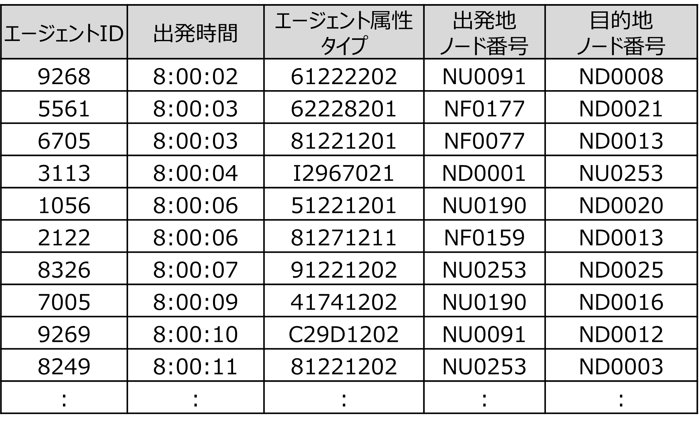

参考：エージェントデータの生成方法
ここでは、歩行シミュレーションに用いたエージェント情報の生成方法の概要を記載します。
生成方法
- エージェント情報として、下記内容を含むcsvデータを用意します。
- エージェントID
- 出発時間
- エージェント属性
- エージェントが出発するノードID
- エージェントが目的地とするノードID 
なお、本業務では、エージェントのOD交通量（どこからどこまで、どれくらいの人数が移動するか）の取得において、「KDDI Location Analyzer」を使用しています。

また、エージェントの発生時刻、エージェントの属性について、第6回東京都市圏パーソントリップ調査から取得したデータを参考にしています。